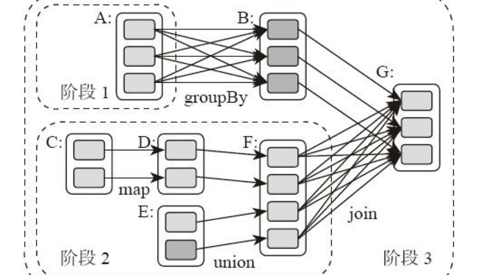
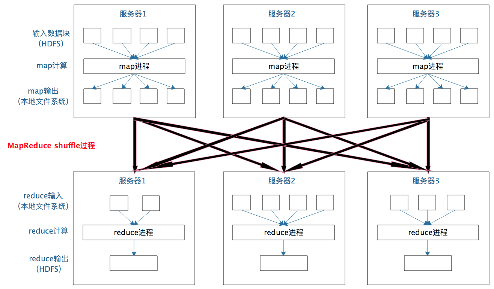
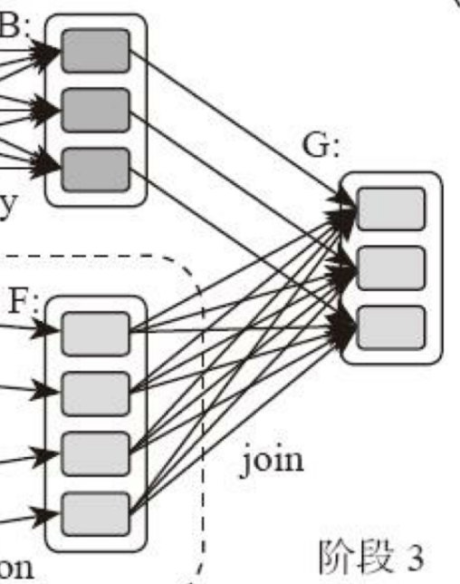
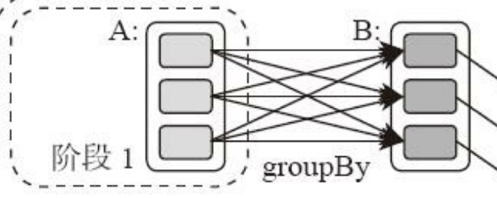
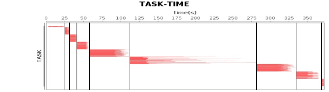
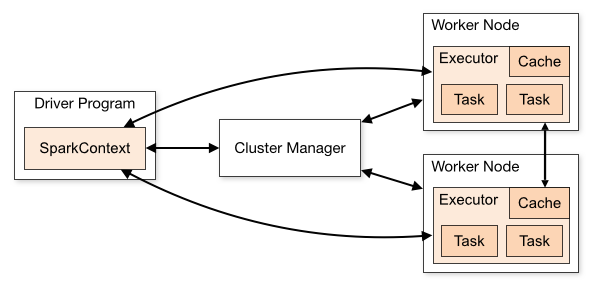

- 00 开篇词 为什么说每个软件工程师都应该懂大数据技术？.md.html
- 01 大数据技术发展史：大数据的前世今生.md.html
- 02 大数据应用发展史：从搜索引擎到人工智能.md.html
- 03 大数据应用领域：数据驱动一切.md.html
- 04 移动计算比移动数据更划算.md.html
- 05 从RAID看垂直伸缩到水平伸缩的演化.md.html
- 06 新技术层出不穷，HDFS依然是存储的王者.md.html
- 07 为什么说MapReduce既是编程模型又是计算框架？.md.html
- 08 MapReduce如何让数据完成一次旅行？.md.html
- 09 为什么我们管Yarn叫作资源调度框架？.md.html
- 10 模块答疑：我们能从Hadoop学到什么？.md.html
- 11 Hive是如何让MapReduce实现SQL操作的？.md.html
- 12 我们并没有觉得MapReduce速度慢，直到Spark出现.md.html
- 13 同样的本质，为何Spark可以更高效？.md.html
- 14 BigTable的开源实现：HBase.md.html
- 15 流式计算的代表：Storm、Flink、Spark Streaming.md.html
- 16 ZooKeeper是如何保证数据一致性的？.md.html
- 17 模块答疑：这么多技术，到底都能用在什么场景里？.md.html
- 18 如何自己开发一个大数据SQL引擎？.md.html
- 19 Spark的性能优化案例分析（上）.md.html
- 20 Spark的性能优化案例分析（下）.md.html
- 21 从阿里内部产品看海量数据处理系统的设计（上）：Doris的立项.md.html
- 22 从阿里内部产品看海量数据处理系统的设计（下）：架构与创新.md.html
- 23 大数据基准测试可以带来什么好处？.md.html
- 24 从大数据性能测试工具Dew看如何快速开发大数据系统.md.html
- 25 模块答疑：我能从大厂的大数据开发实践中学到什么？.md.html
- 26 互联网产品 + 大数据产品 = 大数据平台.md.html
- 27 大数据从哪里来？.md.html
- 28 知名大厂如何搭建大数据平台？.md.html
- 29 盘点可供中小企业参考的商业大数据平台.md.html
- 30 当大数据遇上物联网.md.html
- 31 模块答疑：为什么大数据平台至关重要？.md.html
- 32 互联网运营数据指标与可视化监控.md.html
- 33 一个电商网站订单下降的数据分析案例.md.html
- 34 A_B测试与灰度发布必知必会.md.html
- 35 如何利用大数据成为“增长黑客”？.md.html
- 36 模块答疑：为什么说数据驱动运营？.md.html
- 37 如何对数据进行分类和预测？.md.html
- 38 如何发掘数据之间的关系？.md.html
- 39 如何预测用户的喜好？.md.html
- 40 机器学习的数学原理是什么？.md.html
- 41 从感知机到神经网络算法.md.html
- 42 模块答疑：软件工程师如何进入人工智能领域？.md.html
- 所有的不确定都是机会——智慧写给你的新年寄语.md.html
- 第2季回归丨大数据之后，让我们回归后端.md.html
- 结束语 未来的你，有无限可能.md.html
- 捐赠
13 同样的本质，为何Spark可以更高效？
上一期我们讨论了Spark的编程模型，这期我们聊聊Spark的架构原理。和MapReduce一样，Spark也遵循移动计算比移动数据更划算这一大数据计算基本原则。但是和MapReduce僵化的Map与Reduce分阶段计算相比，Spark的计算框架更加富有弹性和灵活性，进而有更好的运行性能。
Spark的计算阶段
我们可以对比来看。首先和MapReduce一个应用一次只运行一个map和一个reduce不同，Spark可以根据应用的复杂程度，分割成更多的计算阶段（stage），这些计算阶段组成一个有向无环图DAG，Spark任务调度器可以根据DAG的依赖关系执行计算阶段。
还记得在上一期，我举了一个比较逻辑回归机器学习性能的例子，发现Spark比MapReduce快100多倍。因为某些机器学习算法可能需要进行大量的迭代计算，产生数万个计算阶段，这些计算阶段在一个应用中处理完成，而不是像MapReduce那样需要启动数万个应用，因此极大地提高了运行效率。
所谓DAG也就是有向无环图，就是说不同阶段的依赖关系是有向的，计算过程只能沿着依赖关系方向执行，被依赖的阶段执行完成之前，依赖的阶段不能开始执行，同时，这个依赖关系不能有环形依赖，否则就成为死循环了。下面这张图描述了一个典型的Spark运行DAG的不同阶段。

从图上看，整个应用被切分成3个阶段，阶段3需要依赖阶段1和阶段2，阶段1和阶段2互不依赖。Spark在执行调度的时候，先执行阶段1和阶段2，完成以后，再执行阶段3。如果有更多的阶段，Spark的策略也是一样的。只要根据程序初始化好DAG，就建立了依赖关系，然后根据依赖关系顺序执行各个计算阶段，Spark大数据应用的计算就完成了。
上图这个DAG对应的Spark程序伪代码如下。
rddB = rddA.groupBy(key)
rddD = rddC.map(func)
rddF = rddD.union(rddE)
rddG = rddB.join(rddF)
所以，你可以看到Spark作业调度执行的核心是DAG，有了DAG，整个应用就被切分成哪些阶段，每个阶段的依赖关系也就清楚了。之后再根据每个阶段要处理的数据量生成相应的任务集合（TaskSet），每个任务都分配一个任务进程去处理，Spark就实现了大数据的分布式计算。
具体来看的话，负责Spark应用DAG生成和管理的组件是DAGScheduler，DAGScheduler根据程序代码生成DAG，然后将程序分发到分布式计算集群，按计算阶段的先后关系调度执行。
那么Spark划分计算阶段的依据是什么呢？显然并不是RDD上的每个转换函数都会生成一个计算阶段，比如上面的例子有4个转换函数，但是只有3个阶段。
你可以再观察一下上面的DAG图，关于计算阶段的划分从图上就能看出规律，当RDD之间的转换连接线呈现多对多交叉连接的时候，就会产生新的阶段。一个RDD代表一个数据集，图中每个RDD里面都包含多个小块，每个小块代表RDD的一个分片。
一个数据集中的多个数据分片需要进行分区传输，写入到另一个数据集的不同分片中，这种数据分区交叉传输的操作，我们在MapReduce的运行过程中也看到过。

是的，这就是shuffle过程，Spark也需要通过shuffle将数据进行重新组合，相同Key的数据放在一起，进行聚合、关联等操作，因而每次shuffle都产生新的计算阶段。这也是为什么计算阶段会有依赖关系，它需要的数据来源于前面一个或多个计算阶段产生的数据，必须等待前面的阶段执行完毕才能进行shuffle，并得到数据。
这里需要你特别注意的是，计算阶段划分的依据是shuffle，不是转换函数的类型，有的函数有时候有shuffle，有时候没有。比如上图例子中RDD B和RDD F进行join，得到RDD G，这里的RDD F需要进行shuffle，RDD B就不需要。

因为RDD B在前面一个阶段，阶段1的shuffle过程中，已经进行了数据分区。分区数目和分区Key不变，就不需要再进行shuffle。

这种不需要进行shuffle的依赖，在Spark里被称作窄依赖；相反的，需要进行shuffle的依赖，被称作宽依赖。跟MapReduce一样，shuffle也是Spark最重要的一个环节，只有通过shuffle，相关数据才能互相计算，构建起复杂的应用逻辑。
在你熟悉Spark里的shuffle机制后我们回到今天文章的标题，同样都要经过shuffle，为什么Spark可以更高效呢？
其实从本质上看，Spark可以算作是一种MapReduce计算模型的不同实现。Hadoop MapReduce简单粗暴地根据shuffle将大数据计算分成Map和Reduce两个阶段，然后就算完事了。而Spark更细腻一点，将前一个的Reduce和后一个的Map连接起来，当作一个阶段持续计算，形成一个更加优雅、高效的计算模型，虽然其本质依然是Map和Reduce。但是这种多个计算阶段依赖执行的方案可以有效减少对HDFS的访问，减少作业的调度执行次数，因此执行速度也更快。
并且和Hadoop MapReduce主要使用磁盘存储shuffle过程中的数据不同，Spark优先使用内存进行数据存储，包括RDD数据。除非是内存不够用了，否则是尽可能使用内存， 这也是Spark性能比Hadoop高的另一个原因。
Spark的作业管理
我在专栏上一期提到，Spark里面的RDD函数有两种，一种是转换函数，调用以后得到的还是一个RDD，RDD的计算逻辑主要通过转换函数完成。
另一种是action函数，调用以后不再返回RDD。比如count()函数，返回RDD中数据的元素个数；saveAsTextFile(path)，将RDD数据存储到path路径下。Spark的DAGScheduler在遇到shuffle的时候，会生成一个计算阶段，在遇到action函数的时候，会生成一个作业（job）。
RDD里面的每个数据分片，Spark都会创建一个计算任务去处理，所以一个计算阶段会包含很多个计算任务（task）。
关于作业、计算阶段、任务的依赖和时间先后关系你可以通过下图看到。

图中横轴方向是时间，纵轴方向是任务。两条粗黑线之间是一个作业，两条细线之间是一个计算阶段。一个作业至少包含一个计算阶段。水平方向红色的线是任务，每个阶段由很多个任务组成，这些任务组成一个任务集合。
DAGScheduler根据代码生成DAG图以后，Spark的任务调度就以任务为单位进行分配，将任务分配到分布式集群的不同机器上执行。
Spark的执行过程
Spark支持Standalone、Yarn、Mesos、Kubernetes等多种部署方案，几种部署方案原理也都一样，只是不同组件角色命名不同，但是核心功能和运行流程都差不多。

上面这张图是Spark的运行流程，我们一步一步来看。
首先，Spark应用程序启动在自己的JVM进程里，即Driver进程，启动后调用SparkContext初始化执行配置和输入数据。SparkContext启动DAGScheduler构造执行的DAG图，切分成最小的执行单位也就是计算任务。
然后Driver向Cluster Manager请求计算资源，用于DAG的分布式计算。Cluster Manager收到请求以后，将Driver的主机地址等信息通知给集群的所有计算节点Worker。
Worker收到信息以后，根据Driver的主机地址，跟Driver通信并注册，然后根据自己的空闲资源向Driver通报自己可以领用的任务数。Driver根据DAG图开始向注册的Worker分配任务。
Worker收到任务后，启动Executor进程开始执行任务。Executor先检查自己是否有Driver的执行代码，如果没有，从Driver下载执行代码，通过Java反射加载后开始执行。
小结
总结来说，Spark有三个主要特性：RDD的编程模型更简单，DAG切分的多阶段计算过程更快速，使用内存存储中间计算结果更高效。这三个特性使得Spark相对Hadoop MapReduce可以有更快的执行速度，以及更简单的编程实现。
Spark的出现和流行其实也有某种必然性，是天时、地利、人和的共同作用。首先，Spark在2012年左右开始流行，那时内存的容量提升和成本降低已经比MapReduce出现的十年前强了一个数量级，Spark优先使用内存的条件已经成熟；其次，使用大数据进行机器学习的需求越来越强烈，不再是早先年那种数据分析的简单计算需求。而机器学习的算法大多需要很多轮迭代，Spark的stage划分相比Map和Reduce的简单划分，有更加友好的编程体验和更高效的执行效率。于是Spark成为大数据计算新的王者也就不足为奇了。
思考题
Spark的流行离不开它成功的开源运作，开源并不是把源代码丢到GitHub上公开就万事大吉了，一个成功的开源项目需要吸引大量高质量开发者参与其中，还需要很多用户使用才能形成影响力。
Spark开发团队为Spark开源运作进行了大量的商业和非商业活动，你了解这些活动有哪些吗？假如你所在的公司想要开源自己的软件，用于提升自己公司的技术竞争力和影响力，如果是你负责人，你应该如何运作？
欢迎你写下自己的思考或疑问，与我和其他同学一起讨论。
© 2019 - 2023 Liangliang Lee. Powered by gin and hexo-theme-book.